🎨 Lesson 3.3: Customizing Plots
Take a chart from "correct" to "clear": a title that states the finding, axes people can read, color that points at what matters, and nothing on the page that does not earn its place.
🎯 Learning Objectives
By the end of this lesson, you will be able to:
- Write a chart title that states the finding, with a subtitle that says what is plotted
- Format tick labels as money, percentages and readable dates with formatters and locators
- Use color for a purpose (highlight, category, magnitude) and choose palettes that work for color-blind readers
- Replace a legend with direct labels, and add annotations and shaded spans that point at the evidence
- Remove chart junk, and capture your choices in
rcParamsso every chart starts out styled
In This Lesson
📝 A Default Chart Is a First Draft
The charts you made in the last two lessons were for you: quick pictures to find out what the data says. Sooner or later a chart has to work for someone else, a manager with thirty seconds or a reader who was not there when you explored. That chart has a different job. It does not ask "what is in here?" It says "here is what I found."
💡 Mental Model: You Are the Editor
Think of Matplotlib's default output as a first draft from a reporter: accurate, complete, and with no idea what the story is. Your job is the editor's. An editor writes the headline, cuts what does not serve the story, and makes sure the reader's eye lands on the important sentence first. Customizing a chart is editing, not decorating. Every change in this lesson answers one question: does this help the reader get the point faster?
Start a new notebook. This lesson edits one chart from draft to finished, so load the store data and build the monthly table you know from Lessons 3.1 and 3.2.
import matplotlib as mpl
import matplotlib.dates as mdates
import matplotlib.pyplot as plt
import numpy as np
import pandas as pd
from matplotlib.ticker import FuncFormatter, PercentFormatter
pd.set_option("display.width", 150)
pd.set_option("display.max_columns", 20)
daily = pd.read_csv("data/daily_sales.csv", parse_dates=["date"])
daily["month"] = daily["date"].dt.to_period("M").dt.to_timestamp()
monthly = daily.pivot_table(index="month", columns="store", values="revenue", aggfunc="sum")
stores = list(monthly.columns)
def new_chart():
"""One figure, one Axes, in the size used throughout this lesson."""
return plt.subplots(figsize=(9, 4.2), layout="constrained")
def draw_lines(ax):
"""Draw the four monthly revenue lines with Matplotlib's defaults."""
for store in stores:
ax.plot(monthly.index, monthly[store], label=store)
fig, ax = new_chart()
draw_lines(ax)
ax.set_title("Monthly revenue by store")
ax.legend()
plt.show()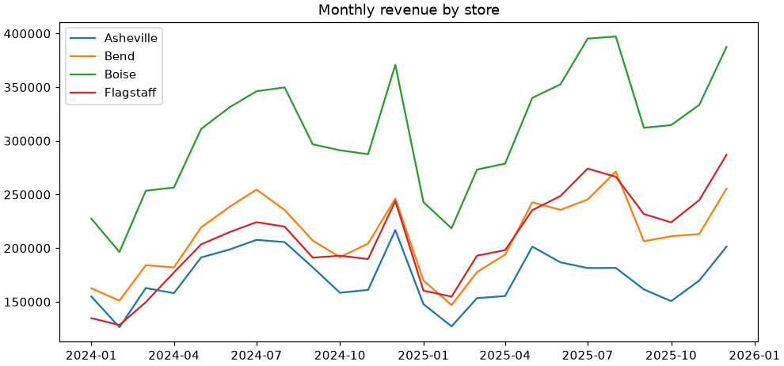
Look at it as a stranger would. The title names the data but not the point. Four equally loud colors compete. To know which line is which, your eye has to travel to the legend and back four times. The y axis says 150000: dollars? units? The x axis repeats the year on every label.
Before editing, decide what the story is. In Lesson 3.2 you noticed Flagstaff climbing through the pack. Check the claim with numbers before it goes in a headline.
print(monthly.iloc[0].sort_values().round(0)) # January 2024, smallest first
print(monthly.iloc[-1].sort_values().round(0)) # December 2025Output
store
Flagstaff 134690.0
Asheville 154850.0
Bend 162534.0
Boise 227438.0
Name: 2024-01-01 00:00:00, dtype: float64
store
Asheville 201331.0
Bend 255359.0
Flagstaff 286876.0
Boise 387449.0
Name: 2025-12-01 00:00:00, dtype: float64Flagstaff was the smallest store in January 2024 and the second largest in December 2025. That is the story, and each section below adds one kind of edit that helps tell it. To keep the steps short, each edit goes into a small function that takes an ax, the habit you built in Lesson 3.2.
📰 Titles That State the Finding
The title is the most-read text on any chart, and often the only text that is read. "Monthly revenue by store" spends it on a description. Compare:
| Descriptive title (what the chart is) | Finding title (what the chart says) |
|---|---|
| Monthly revenue by store | Flagstaff grew from Pinecrest's smallest store to its second largest |
| Visitors on dry and rainy days | Rain cuts store traffic by about a fifth |
| Return rate by category | Online orders with footwear come back twice as often |
The description still matters: the reader needs to know what is plotted and in what units. Put it in a smaller subtitle under the headline. Matplotlib has no subtitle method, but two calls make one: a bold, left-aligned title with some extra padding, and a line of text placed just above the plot area.
def add_titles(ax, headline, subtitle):
"""A bold headline that states the finding, and a gray subtitle that says what is plotted."""
ax.set_title(headline, loc="left", fontsize=13, fontweight="bold", pad=24)
ax.text(0, 1.03, subtitle, transform=ax.transAxes, fontsize=10, color="0.35")
headline = "Flagstaff grew from Pinecrest's smallest store to its second largest"
subtitle = "Monthly in-store revenue, January 2024 to December 2025"
fig, ax = new_chart()
draw_lines(ax)
add_titles(ax, headline, subtitle)
ax.legend()
plt.show()
print(ax.get_title(loc="left"))Output
Flagstaff grew from Pinecrest's smallest store to its second largestThree details are worth understanding:
loc="left"aligns the title with the left edge of the plot, where reading starts.pad=24lifts it 24 points to leave room for the subtitle.transform=ax.transAxeschanges what the coordinates ofax.text()mean. Normally they are data values (a date and a dollar amount). With this transform they are fractions of the Axes:(0, 0)is the bottom-left corner and(1, 1)the top-right, so(0, 1.03)is "left edge, just above the top", whatever the data is.color="0.35"is a shade of gray: a number in quotes from"0"(black) to"1"(white). Gray text tells the reader "supporting detail".
⚠️ A Finding Title Is a Claim
Once your title says something, it can be wrong. Only write what the data on the chart supports, check it with a number as you just did, and keep causes out of it unless you have tested them. "Flagstaff grew" is on the chart. "Flagstaff grew because of the new manager" is not.
Axis Labels
Label an axis when the reader could not otherwise know what it measures or in what unit: "Revenue (USD)", "Visitors per day". Drop the label when it would only state the obvious. A date axis does not need the word "Date" under it, and once the subtitle says "revenue" and the ticks say "$250K" (next section), a y label would say it a third time.
📏 Ticks and Formatters
Every axis has two helpers working for it. A locator decides where the ticks go. A formatter decides what text each tick shows. The defaults are safe and generic; replacing them is how 250000 becomes $250K and 2024-07 becomes Jul 2024.
Money
The quickest formatter is a Python format string with a field named x, which Matplotlib fills with each tick's value. It is the same mini-language you use in f-strings.
print("${x:,.0f}".format(x=250000)) # what Matplotlib does with each tick value
def thousands(x, pos):
"""Format a tick value as thousands of dollars. pos is the tick's position (unused)."""
return f"${x / 1000:,.0f}K"
print(thousands(250000, None))Output
$250,000
$250KWhen a format string is not enough, as with dividing by 1,000, write a small function that takes the value and returns the text, and wrap it in FuncFormatter.
| You want | Code | 250000 becomes |
|---|---|---|
| Dollars with commas | ax.yaxis.set_major_formatter("${x:,.0f}") | $250,000 |
| Thousands of dollars | ax.yaxis.set_major_formatter(FuncFormatter(thousands)) | $250K |
| Plain commas | ax.yaxis.set_major_formatter("{x:,.0f}") | 250,000 |
| A fraction as a percent | ax.yaxis.set_major_formatter(PercentFormatter(xmax=1)) | (0.25 becomes 25%) |
Dates
Date axes have their own locators and formatters in matplotlib.dates, imported above as mdates. MonthLocator(bymonth=[1, 7]) puts a tick at the start of every January and July. DateFormatter takes the same strftime codes as Python's datetime.
| Code | Meaning | Example |
|---|---|---|
%Y, %y | Year, 4 or 2 digits | 2025, 25 |
%b, %B | Month name, short or full | Jul, July |
%d | Day of the month | 04 |
%a | Weekday name, short | Sat |
Put the money and date choices for this chart into one function. It also starts the y axis at zero: a line chart does not have to, but here the reader is meant to compare the sizes of the stores, and a zero baseline keeps those proportions honest.
def format_axes(ax):
"""Dollars in thousands on y; January and July on x; y axis from zero."""
ax.yaxis.set_major_formatter(FuncFormatter(thousands))
ax.xaxis.set_major_locator(mdates.MonthLocator(bymonth=[1, 7]))
ax.xaxis.set_major_formatter(mdates.DateFormatter("%b %Y"))
ax.set_ylim(bottom=0)
fig, ax = new_chart()
draw_lines(ax)
add_titles(ax, headline, subtitle)
format_axes(ax)
ax.legend()
plt.show()
print([label.get_text() for label in ax.get_xticklabels()])
print([label.get_text() for label in ax.get_yticklabels()][:4])Output
['Jan 2024', 'Jul 2024', 'Jan 2025', 'Jul 2025', 'Jan 2026']
['$0K', '$50K', '$100K', '$150K']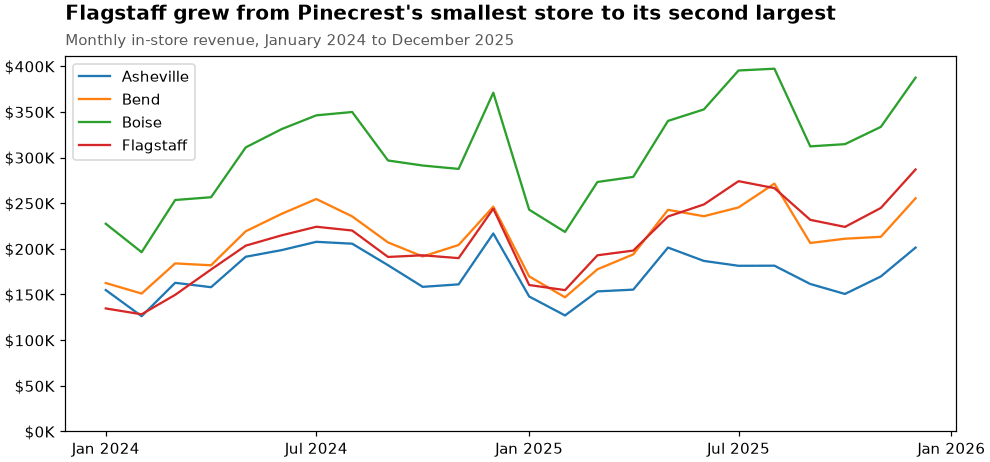
💡 Two More Tick Tools
mdates.ConciseDateFormatter(locator) writes compact date labels that show the year only where it changes (2024, Apr, Jul, Oct, 2025...): a good default for long time series. And for an axis of categories or a few hand-picked positions, ax.set_xticks(positions, labels=[...]), which you used in Lesson 3.2, sets locations and text in one call.
🖍️ Color with a Purpose
Color is the strongest signal on a chart, which is exactly why the default (a different bright color for everything) wastes it. Before choosing colors, decide what job color is doing. There are really only four.
| Job | Palette type | Use it for | Example |
|---|---|---|---|
| Highlight | Gray plus one accent | One series is the story, the rest are context | Flagstaff against the other stores |
| Tell categories apart | Qualitative | A few groups with no order | Dry days and rainy days |
| Show how much | Sequential (light to dark) | A number from low to high | Month of the year, staff on duty |
| Show above or below | Diverging (two hues around a neutral middle) | A number with a meaningful midpoint | Change against last year |
Naming Colors
Anywhere Matplotlib accepts a color you can write a name ("gray", "black"), a hex code ("#667eea"), a gray level in quotes ("0.65"), or a position in the current color cycle ("C0", "C1"). For palettes, Matplotlib ships dozens of colormaps in the matplotlib.colormaps registry. A colormap is a function from a number between 0 and 1 to a color, so you can sample as many colors from it as you need.
okabe_ito = ["#0072b2", "#e69f00", "#009e73", "#d55e00", "#cc79a7", "#56b4e9", "#f0e442", "#000000"]
viridis = mpl.colormaps["viridis"]
print(mpl.colors.to_hex(viridis(0.0)), mpl.colors.to_hex(viridis(0.5)), mpl.colors.to_hex(viridis(1.0)))
sequential = [mpl.colors.to_hex(viridis(v)) for v in np.linspace(0, 1, 8)]
diverging = [mpl.colors.to_hex(mpl.colormaps["RdBu"](v)) for v in np.linspace(0, 1, 8)]
fig, axs = plt.subplots(3, 1, figsize=(8, 2.7), layout="constrained")
palettes = [("Qualitative: the Okabe-Ito palette (categories)", okabe_ito),
("Sequential: viridis (low to high)", sequential),
("Diverging: RdBu (below and above a midpoint)", diverging)]
for ax, (name, colors) in zip(axs, palettes):
ax.bar(range(8), [1] * 8, color=colors, width=1)
ax.set_title(name, loc="left", fontsize=10)
ax.set_axis_off()
plt.show()Output
#440154 #21918c #fde725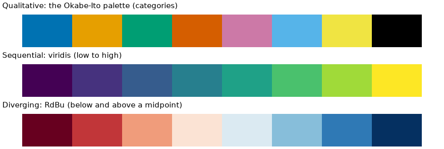
Sequential Color at Work: A Heatmap
When color has the "how much" job, the classic chart is a heatmap: a table of numbers drawn as a grid of colored cells. ax.imshow() draws any 2-D array that way, one cell per value, and fig.colorbar() adds the scale that tells the reader which color means which number. Mean store revenue by weekday and month makes a 7 by 12 table:
grid = daily.pivot_table(index=daily["date"].dt.dayofweek, columns=daily["date"].dt.month,
values="revenue", aggfunc="mean")
print(grid.shape, "lowest cell:", round(grid.min().min()), "highest cell:", round(grid.max().max()))
fig, ax = plt.subplots(figsize=(9, 3.6), layout="constrained")
image = ax.imshow(grid.values, cmap="viridis", aspect="auto")
fig.colorbar(image, ax=ax, label="Mean revenue per store-day (USD)")
ax.set_xticks(range(12), labels=["Jan", "Feb", "Mar", "Apr", "May", "Jun", "Jul", "Aug", "Sep", "Oct", "Nov", "Dec"])
ax.set_yticks(range(7), labels=["Mon", "Tue", "Wed", "Thu", "Fri", "Sat", "Sun"])
ax.set_title("Weekends and December are when Pinecrest's stores earn the most", loc="left", fontweight="bold")
plt.show()Output
(7, 12) lowest cell: 4432 highest cell: 13264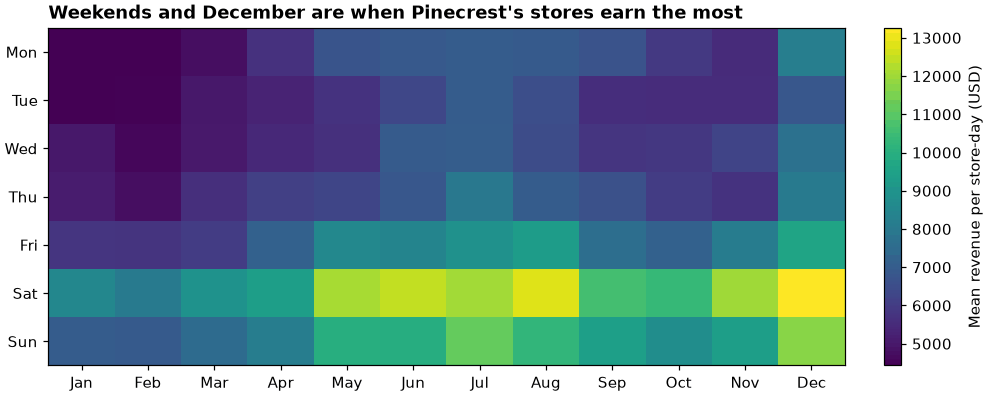
imshow places row 0 at the top and labels cells by position, so the tick labels are set by hand. A sequential map suits this table because revenue runs from low to high with no special midpoint; a table of changes against last year, with zero in the middle, would call for a diverging one. You will meet this chart again in Module 4 for correlation tables.
Color-Blind-Safe Choices
Roughly one man in twelve and one woman in two hundred has some form of color vision deficiency, most often difficulty telling red from green. In any meeting of a dozen people, someone probably cannot read a chart that depends on that difference. Three habits make your charts work for everyone, and none of them makes the chart worse for anybody else:
- Start from a palette designed for it. The eight Okabe-Ito colors above are a widely used qualitative set chosen to stay distinguishable under the common forms of color blindness (skip the yellow for thin lines on white).
viridisand its relativescividis,plasmaandmagmaare sequential maps that also get steadily lighter, so they survive gray printing. Matplotlib includes a ready-made style,"tableau-colorblind10", that swaps the default cycle (see Styles and rcParams). - Avoid red against green as the only difference between two things, and avoid rainbow maps such as
jet, whose brightness goes up and down and invents boundaries that are not in the data. - Never let color carry the message alone. Add a second cue: a different line style or marker, a direct label, position. You did this in Lesson 3.1 when the promotion days were orange and triangles.
Gray Plus One
This chart's story is about one store. So one store gets color and weight, and the other three become context. Upgrade draw_lines() with an optional focus.
def draw_lines(ax, focus=None):
"""Draw the four monthly revenue lines. With focus, that store is colored and the rest are gray."""
for store in stores:
if focus is None:
ax.plot(monthly.index, monthly[store], label=store)
elif store == focus:
ax.plot(monthly.index, monthly[store], label=store, color="#667eea", linewidth=2.8, zorder=3)
else:
ax.plot(monthly.index, monthly[store], label=store, color="0.6", linewidth=1.3)
fig, ax = new_chart()
draw_lines(ax, focus="Flagstaff")
print([(line.get_label(), line.get_color()) for line in ax.lines])
plt.close(fig)Output
[('Asheville', '0.6'), ('Bend', '0.6'), ('Boise', '0.6'), ('Flagstaff', '#667eea')]The gray lines are now distinguishable only by position, which makes a legend useless. That is the next edit.
🏷️ Legends or Direct Labels
A legend is a lookup table: find a line, note its color, find that color in the box, read the name, go back. For each series. Direct labels put each name next to its own line, so there is nothing to look up and nothing that depends on telling colors apart.
Each line that ax.plot() draws is an object that remembers its data, label and color. So one short function can label every line at its last point, whatever chart it is given. ax.annotate() places text relative to a data point; textcoords="offset points" means "6 points to the right of that point", which keeps the gap the same at any figure size. The last two lines widen the x axis a little so the names have somewhere to sit.
def label_line_ends(ax):
"""Write each line's label just right of its last point, in the line's own color."""
for line in ax.lines:
x, y = line.get_xdata()[-1], line.get_ydata()[-1]
ax.annotate(line.get_label(), xy=(x, y), xytext=(6, 0), textcoords="offset points",
va="center", fontsize=10, color=line.get_color())
left, right = ax.get_xlim()
ax.set_xlim(left, right + 0.09 * (right - left)) # room for the names
fig, ax = new_chart()
draw_lines(ax, focus="Flagstaff")
add_titles(ax, headline, subtitle)
format_axes(ax)
label_line_ends(ax)
plt.show()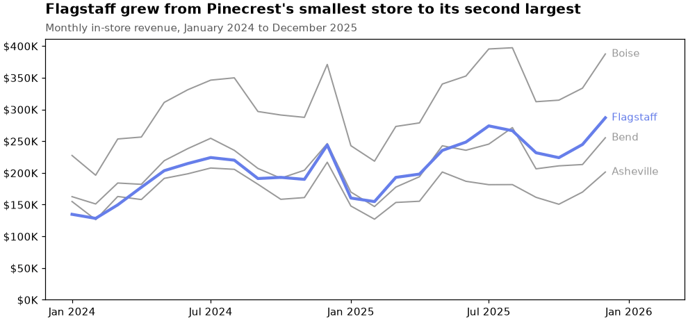
Direct labels work when lines end far enough apart to label, which is most charts with up to five or six series. When a legend really is the better choice (many small-multiple panels sharing one key, or bars and fills with no natural "end"), make it as quiet as you can:
fig, ax = new_chart()
draw_lines(ax)
legend = ax.legend(loc="upper left", ncols=4, frameon=False, title="Store")
print(legend.get_title().get_text(), [text.get_text() for text in legend.get_texts()])
plt.close(fig)Output
Store ['Asheville', 'Bend', 'Boise', 'Flagstaff']frameon=False removes the box, ncols=4 lays the entries out in a row, and loc moves the legend to a corner where there is no data. Listing the entries in the same order as the lines appear on the chart (top to bottom) also saves the reader a step.
📍 Annotations
An annotation is a sentence written on the chart, pointing at the evidence. It is what you would say out loud while pointing at a slide. Three tools cover nearly every need.
| Tool | Draws | Use it to |
|---|---|---|
ax.annotate(text, xy=..., xytext=..., arrowprops=...) | Text with an arrow to a data point | Call out one value or event |
ax.axvspan(start, end), ax.axhspan(low, high) | A shaded band | Mark a period or a range (a sale, a season, a target zone) |
ax.axvline(x), ax.axhline(y) | A line across the whole chart | Mark a date, an average, a target |
In ax.annotate(), xy is the point the arrow points at and xytext is where the text sits; both are in data coordinates unless you say otherwise. Here the two ends of Flagstaff's line get a callout each, and the November and December holiday season, which lifts every store, gets a quiet shaded band so that those spikes explain themselves.
def annotate_story(ax):
"""Shade the holiday seasons and call out where Flagstaff started and finished."""
for year in (2024, 2025):
ax.axvspan(pd.Timestamp(f"{year}-11-01"), pd.Timestamp(f"{year}-12-31"), color="0.93", zorder=0)
ax.text(pd.Timestamp("2024-12-01"), 20000, "Holiday\nseason", ha="center", fontsize=9, color="0.35")
flag = monthly["Flagstaff"]
arrow = {"arrowstyle": "->", "color": "0.3"}
ax.annotate(f"Jan 2024: ${flag.iloc[0] / 1000:.0f}K\nthe smallest store",
xy=(flag.index[0], flag.iloc[0]), xytext=(pd.Timestamp("2024-02-15"), 55000),
arrowprops=arrow, fontsize=9)
ax.annotate(f"Dec 2025: ${flag.iloc[-1] / 1000:.0f}K\nsecond only to Boise",
xy=(flag.index[-1], flag.iloc[-1]), xytext=(pd.Timestamp("2025-06-10"), 95000),
arrowprops=arrow, fontsize=9)
fig, ax = new_chart()
draw_lines(ax, focus="Flagstaff")
add_titles(ax, headline, subtitle)
format_axes(ax)
label_line_ends(ax)
annotate_story(ax)
plt.show()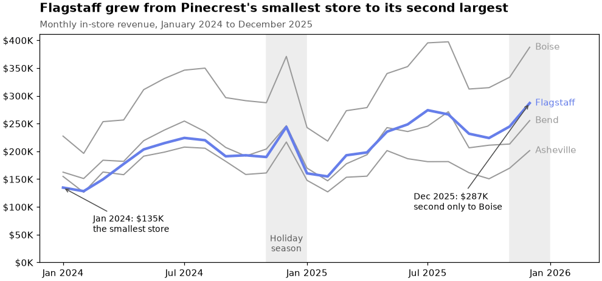
⚠️ Annotate Sparingly
Finding good positions for xytext takes a few tries; that is normal, and it is quicker to adjust and rerun than to calculate. But each annotation is also a demand on the reader's attention. One to three is usually right. If you want to annotate six things, you probably have two charts.
🧹 Removing Chart Junk
Chart junk is ink that carries no information: the box around the plot, heavy grid lines, tick marks nobody uses, a legend that repeats the labels, a y label that repeats the subtitle, shadows and 3-D effects. Each piece is small. Together they are noise the reader has to see through. The editor's last pass is deletion.
def clean_up(ax):
"""Remove the frame's top and right sides and the tick marks; add a faint horizontal grid."""
ax.spines[["top", "right"]].set_visible(False)
ax.tick_params(length=0)
ax.grid(axis="y", color="0.9")
ax.set_axisbelow(True)
fig, ax = new_chart()
draw_lines(ax, focus="Flagstaff")
add_titles(ax, headline, subtitle)
format_axes(ax)
label_line_ends(ax)
annotate_story(ax)
clean_up(ax)
plt.show()
print("Sides of the frame still visible:", [side for side in ax.spines if ax.spines[side].get_visible()])Output
Sides of the frame still visible: ['left', 'bottom']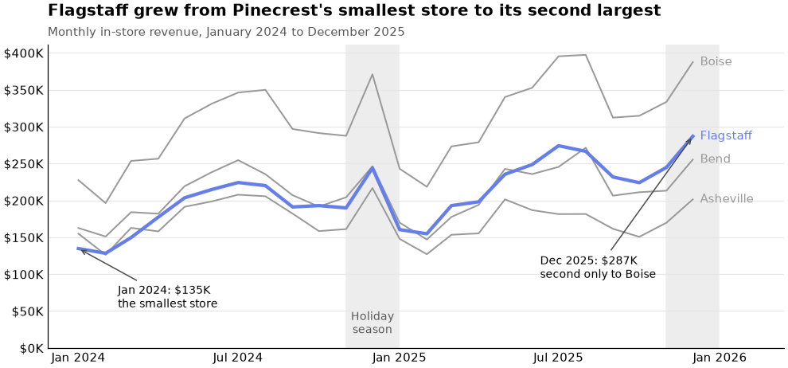
The spines are the four sides of the frame; the top and right ones mark nothing. A faint grid on one axis helps the reader estimate values without drawing attention to itself, and ax.set_axisbelow(True) keeps it behind the data.
💡 An Editing Checklist
Before you call a chart finished, ask of every element: if I removed this, would the reader lose anything? Then check the other direction: is anything the reader needs still missing (units, the time period, the source of the data)? Removing junk is not minimalism for its own sake. The goal is that everything left on the page is working.
🎛️ Styles and rcParams
You just removed the top spine, chose a font size and added a grid by hand. Do that on every chart and you will tire of it. Matplotlib keeps all of its defaults in one dictionary-like object, plt.rcParams ("rc" is an old Unix term for a startup configuration file). Change a value there and every chart drawn afterward starts from your choice.
print(len(plt.rcParams), "settings")
print(plt.rcParams["font.size"], plt.rcParams["figure.figsize"], plt.rcParams["axes.spines.top"])Output
339 settings
10.0 [6.4, 4.8] TrueChanging plt.rcParams directly affects the rest of your session, which is easy to forget. The safer habit is plt.rc_context(): settings apply inside the with block and are put back afterward. Collect your choices in a dictionary and you have a house style.
pinecrest_style = {
"font.size": 11,
"axes.titlelocation": "left",
"axes.titleweight": "bold",
"axes.spines.top": False,
"axes.spines.right": False,
"axes.grid": True,
"axes.grid.axis": "y",
"grid.color": "0.9",
"axes.axisbelow": True,
"xtick.major.size": 0,
"ytick.major.size": 0,
"legend.frameon": False,
"axes.prop_cycle": mpl.cycler(color=okabe_ito[:6]),
}
with plt.rc_context(pinecrest_style):
fig, ax = plt.subplots(figsize=(9, 3.8), layout="constrained")
for store in stores:
ax.plot(monthly.index, monthly[store], label=store)
ax.set_title("Monthly revenue by store")
ax.legend(ncols=4)
plt.show()
print("Outside the block, axes.spines.top is", plt.rcParams["axes.spines.top"])Output
Outside the block, axes.spines.top is True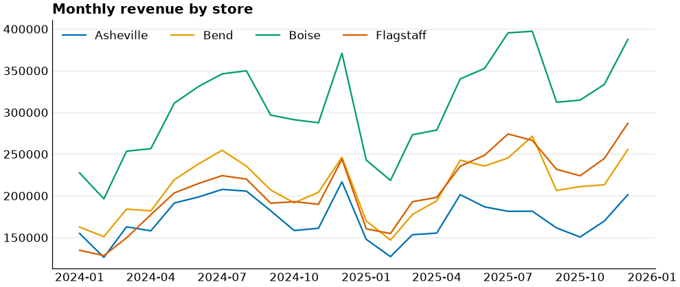
The plotting code inside the block is as plain as the first draft, but the chart arrives with a bold left title, no top or right spine, a faint grid, a frameless legend, and color-blind-safe line colors, because axes.prop_cycle replaced the default color cycle. A style cannot write your headline or choose what to highlight. It takes care of everything that is the same on every chart, so your attention goes to what is different.
Ready-Made Styles
Matplotlib ships named bundles of rcParams called style sheets. Use one for a block with plt.style.context().
print(len(plt.style.available), "styles, including:")
print([name for name in plt.style.available if "colorblind" in name or name in ("ggplot", "grayscale", "dark_background")])
with plt.style.context("tableau-colorblind10"):
print(plt.rcParams["axes.prop_cycle"].by_key()["color"][:4])Output
28 styles, including:
['dark_background', 'ggplot', 'grayscale', 'seaborn-v0_8-colorblind', 'tableau-colorblind10']
['#006BA4', '#FF800E', '#ABABAB', '#595959']💡 Where a Style Can Live
A dictionary in your notebook is the simplest home for a style. For a whole project, put the same settings in a text file ending in .mplstyle (one name: value per line) and load it with plt.style.context("pinecrest.mplstyle"). Lesson 3.4 builds on this with a function that applies the house style and saves the figure for its destination.
⚠️ Common Mistakes
Customization errors are usually small typos with unfriendly messages. None of them means you are doing it wrong: everyone looks up tick formatters every time.
1. A Format String Without the x
fig, ax = plt.subplots()
ax.plot([1, 2, 3], [1000, 2500, 1800])
ax.yaxis.set_major_formatter("${:,.0f}") # no x inside the braces
try:
fig.canvas.draw() # labels are formatted when the figure is drawn
finally:
plt.close(fig)Error
IndexError: tuple index out of rangeWhat it means: Matplotlib passes each tick value to the format string by name, as x. A string with empty braces has no field called x, and the failure appears only when the figure is drawn, which in a notebook is at the end of the cell, far from the line that caused it. (The try and finally here only force the drawing and tidy up so this page can be tested.) Fix: "${x:,.0f}".
2. More Ticks Than Labels
fig, ax = plt.subplots()
ax.bar([0, 1, 2], [5, 7, 3])
ax.set_xticks([0, 1, 2], labels=["Boise", "Bend"])Error
ValueError: The number of FixedLocator locations (3), usually from a call to set_ticks, does not match the number of labels (2).What it means: three tick positions, two labels. ("FixedLocator" is the locator that set_xticks installs.) Fix: one label per position. A related trap is calling ax.set_xticklabels([...]) without fixing the positions first: Matplotlib warns that ticks may be mislabeled, and they often are. Pass positions and labels together with ax.set_xticks(positions, labels=...).
3. A Misspelled rcParams Name
plt.rcParams["axes.titlesiz"] = 14Error
KeyError: "'axes.titlesiz' is not a valid value for rcParam. Did you mean one of: 'axes.titlesize', 'axes.titley', 'axes.titlepad'?"What it means: rcParams accepts only its own names, and it helpfully suggests close matches. Fix: copy the name from the message. To browse, [k for k in plt.rcParams if "title" in k] lists every setting with "title" in its name.
4. A Bar Chart with a Cut-Off Axis
totals_2025 = daily[daily["date"].dt.year == 2025].groupby("store")["revenue"].sum()
boise, asheville = totals_2025["Boise"], totals_2025["Asheville"]
print("True ratio, Boise to Asheville:", round(boise / asheville, 1))
cut = 1_500_000 # someone sets ax.set_ylim(bottom=1_500_000) "to show the difference better"
print("Ratio of the bar heights drawn:", round((boise - cut) / (asheville - cut), 1))Output (no error, and a chart that exaggerates more than twofold)
True ratio, Boise to Asheville: 1.9
Ratio of the bar heights drawn: 4.5What happened: a bar's length is its value. Start the axis at $1.5 million and Boise's bar is drawn four and a half times as tall as Asheville's when Boise sells less than twice as much. Fix: bars start at zero. If the differences are what matter, plot the differences.
5. Color as the Only Difference
A red line for "returns" and a green line for "sales", identical in every other way, is unreadable to a meaningful share of your audience and to anyone with a gray printout. No message warns you. Fix: a color-blind-safe pair, plus a second cue: direct labels, a dashed line, different markers.
🛠️ Project: The Footwear Returns Chart
The online team suspects that some categories are returned far more than others. You will find out, and then edit the chart until someone who sees it for five seconds gets the point. Continue in your lesson notebook, because the project reuses add_titles(). Allow about 35 minutes.
🛠️ Step 1: Build the numbers (8 min)
For every online order, find which categories it contains, then compute the share of orders containing each category that were returned. An order with boots and a tent counts once for Footwear and once for Tents.
orders = pd.read_csv("data/orders.csv", parse_dates=["order_date"])
items = pd.read_csv("data/order_items.csv")
products = pd.read_csv("data/products.csv")
online = orders[orders["channel"] == "online"]
order_categories = (items.merge(products[["sku", "category"]], on="sku")[["order_id", "category"]]
.drop_duplicates())
online_cat = order_categories.merge(online[["order_id", "status"]], on="order_id")
online_cat["returned"] = online_cat["status"] == "returned"
rate = online_cat.groupby("category")["returned"].mean().sort_values()
overall = (online["status"] == "returned").mean()
print(rate.round(3))
print("All online orders:", round(overall, 3))Output
category
Sleeping 0.058
Tents 0.059
Packs 0.062
Accessories 0.063
Camp Kitchen 0.065
Snow 0.069
Climbing 0.070
Apparel 0.093
Footwear 0.144
Name: returned, dtype: float64
All online orders: 0.069There is the finding: online orders that include Footwear come back about twice as often as the rest.
🛠️ Step 2: Look at the first draft (4 min)
Draw the default chart and list what a stranger would struggle with.
fig, ax = plt.subplots(figsize=(8, 3.6), layout="constrained")
ax.bar(rate.index, rate.values)
ax.set_title("Return rate by category")
plt.show()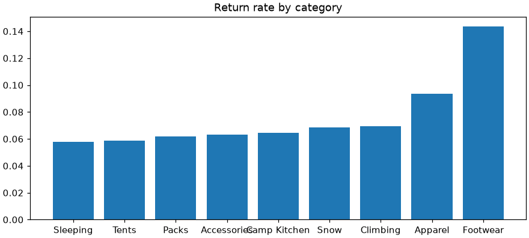
🛠️ Step 3: Shape, format, color (8 min)
Horizontal bars make the names readable. Label each bar with its percentage, which makes the axis itself unnecessary. Then gray for eight bars and one accent color for the story. f"{v:.1%}" formats a fraction such as 0.144 as 14.4%.
colors = ["#d55e00" if category == "Footwear" else "0.75" for category in rate.index]
print(colors[-2:])
fig, ax = plt.subplots(figsize=(8, 4.2), layout="constrained")
bars = ax.barh(rate.index, rate.values, color=colors)
ax.bar_label(bars, labels=[f"{v:.1%}" for v in rate.values], padding=4, fontsize=10)
plt.close(fig)Output
['0.75', '#d55e00']🛠️ Step 4: A reference line and an annotation (7 min)
"Twice as often as what?" Draw the overall online return rate as a dashed vertical line with ax.axvline(), and label it. Text placed with ax.text() uses data coordinates here: x is a rate, y is the bar position (0 is the bottom bar).
def add_reference(ax):
ax.axvline(overall, color="0.3", linestyle="--", linewidth=1)
ax.text(overall + 0.002, -0.25, f"All online orders: {overall:.1%}", fontsize=9, color="0.3", va="center")
print(f"Footwear is {rate['Footwear'] / overall:.1f} times the overall rate")Output
Footwear is 2.1 times the overall rate🛠️ Step 5: Headline, clean-up, source (8 min)
Assemble the finished chart. Hide the x axis (the bar labels replace it), remove every spine but the left, and add a small source note at the bottom of the figure with fig.supxlabel().
fig, ax = plt.subplots(figsize=(9, 4.4), layout="constrained")
bars = ax.barh(rate.index, rate.values, color=colors)
ax.bar_label(bars, labels=[f"{v:.1%}" for v in rate.values], padding=4, fontsize=10)
add_reference(ax)
add_titles(ax, "Online orders with footwear come back twice as often",
"Share of online orders containing each category that were returned, 2024 to 2025")
ax.xaxis.set_visible(False)
ax.spines[["top", "right", "bottom"]].set_visible(False)
ax.tick_params(length=0)
ax.set_xlim(0, rate.max() * 1.12)
fig.supxlabel("Source: Pinecrest orders.csv and order_items.csv. An order with several categories counts once in each.",
fontsize=8, color="0.35", x=0.01, ha="left")
plt.show()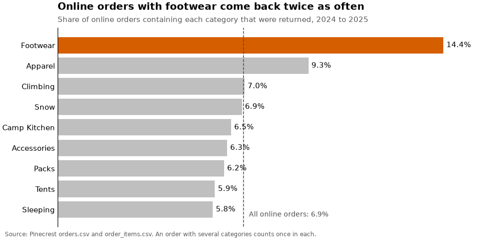
One honest question to ask of your own headline: twice as often as what? Against all online orders, yes: 2.1 times, and the dashed line shows that comparison. Against Apparel alone it is about one and a half times. A first version of this headline said "twice as often as anything else", which the Apparel bar contradicts. When a headline overstates, edit the headline, not the data.
✅ Project Completion Checklist
ratehas nine categories, sorted, and Footwear is the highest at about 14%- The bars are horizontal, labeled with percentages, and exactly one is in an accent color
- A dashed reference line shows the overall online return rate, with a label
- The headline states the finding and the subtitle says what was measured and when
- The top, right and bottom spines, the tick marks and the x axis are gone
- A source note says where the numbers came from and how multi-category orders were counted
- You compared your headline with the numbers and adjusted the wording if it overstated
🏋️ Hands-on Exercises
These continue in the lesson notebook and reuse its variables and functions (daily, monthly, stores, okabe_ito, add_titles, clean_up, thousands).
🏋️ Exercise 1: Dollars and Quarters
Draw Boise's monthly revenue as a single line. Format the y axis in thousands of dollars and put an x tick at the start of every quarter (January, April, July, October), labeled with the short month name on one line and the year on the next. Print the first five x tick labels.
💡 Hint
MonthLocator(bymonth=[1, 4, 7, 10]), and a format string may contain a line break: "%b\n%Y". Tick label text exists only after drawing, so call fig.canvas.draw() before reading the labels.
✅ Solution
fig, ax = plt.subplots(figsize=(9, 3.6), layout="constrained")
ax.plot(monthly.index, monthly["Boise"], color="#667eea", marker="o", markersize=3)
ax.yaxis.set_major_formatter(FuncFormatter(thousands))
ax.xaxis.set_major_locator(mdates.MonthLocator(bymonth=[1, 4, 7, 10]))
ax.xaxis.set_major_formatter(mdates.DateFormatter("%b\n%Y"))
ax.set_title("Boise: monthly revenue")
fig.canvas.draw()
print([label.get_text() for label in ax.get_xticklabels()][:5])
plt.show()Output
['Jan\n2024', 'Apr\n2024', 'Jul\n2024', 'Oct\n2024', 'Jan\n2025']The \n in the printed labels is the line break. Two-line labels are a simple way to fit more ticks on a date axis.
🏋️ Exercise 2: Shade the Weekends
Draw Boise's daily revenue for December 2025 as bars. Shade each weekend (Saturday and Sunday) with a light band behind the bars, label the x axis with the day of the month, and annotate the best day with its revenue. Why is one day missing?
💡 Hint
Loop over the Saturdays (.dt.dayofweek == 5) and call ax.axvspan(saturday - 12 hours, saturday + 36 hours) using pd.Timedelta(hours=12); a bar for a day is centered on midnight at the start of that day. idxmax() gives the row label of the best day.
✅ Solution
dec = daily[(daily["store"] == "Boise") & (daily["date"] >= "2025-12-01")]
best = dec.loc[dec["revenue"].idxmax()]
print(len(dec), "days with data; best:", best["date"].date(), f"${best['revenue']:,.0f}")
fig, ax = plt.subplots(figsize=(9, 3.8), layout="constrained")
for saturday in dec.loc[dec["date"].dt.dayofweek == 5, "date"]:
ax.axvspan(saturday - pd.Timedelta(hours=12), saturday + pd.Timedelta(hours=36), color="0.9", zorder=0)
ax.bar(dec["date"], dec["revenue"], color="#667eea")
ax.xaxis.set_major_locator(mdates.DayLocator(interval=2))
ax.xaxis.set_major_formatter(mdates.DateFormatter("%d"))
ax.yaxis.set_major_formatter(FuncFormatter(thousands))
ax.annotate(f"Best day: ${best['revenue']:,.0f}", xy=(best["date"], best["revenue"]),
xytext=(pd.Timestamp("2025-12-02"), best["revenue"] * 0.95),
arrowprops={"arrowstyle": "->", "color": "0.3"}, fontsize=9)
add_titles(ax, "Boise's December is built on its weekends", "Daily revenue, December 2025 (weekends shaded)")
clean_up(ax)
plt.show()Output
30 days with data; best: 2025-12-13 $22,616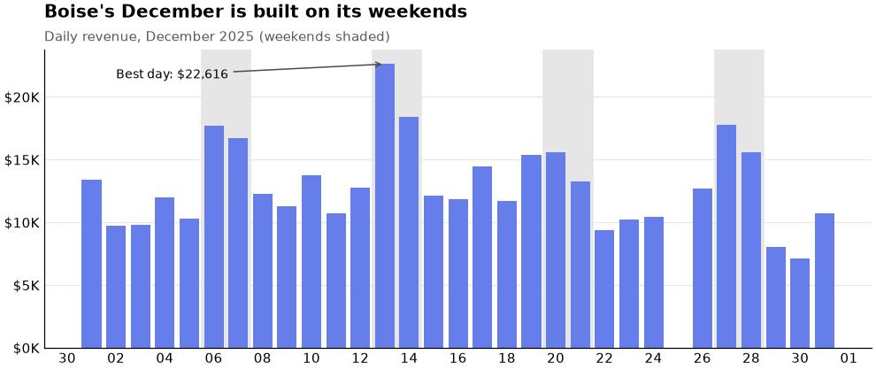
🏋️ Exercise 3: Four Lines Anyone Can Read
Redraw the four-store monthly chart so that it works without color: give each store an Okabe-Ito color and its own line style, label the lines directly, and remove the legend. Print each line's label and style.
💡 Hint
zip(stores, okabe_ito, ["-", "--", "-.", ":"]) hands out a color and a style to each store. label_line_ends(ax) already uses each line's own color.
✅ Solution
fig, ax = new_chart()
for store, color, style in zip(stores, okabe_ito, ["-", "--", "-.", ":"]):
ax.plot(monthly.index, monthly[store], label=store, color=color, linestyle=style, linewidth=2)
format_axes(ax)
label_line_ends(ax)
add_titles(ax, "All four stores peak in summer and in December", "Monthly in-store revenue, 2024 to 2025")
clean_up(ax)
plt.show()
print([(line.get_label(), line.get_linestyle()) for line in ax.lines])Output
[('Asheville', '-'), ('Bend', '--'), ('Boise', '-.'), ('Flagstaff', ':')]Two cues per line, and names at the line ends. Print this chart in gray and it still works.
🏋️ Exercise 4: One Finishing Function (Stretch)
Write finish(ax, headline, subtitle, source=None) that applies your titles and clean-up and, if source is given, adds a small gray source note under the plot. Use it, inside plt.rc_context(pinecrest_style), to finish two different charts with two lines each: a bar chart of mean revenue by weekday for all stores, and a histogram of daily visitors.
💡 Hint
A source note can be ax.text(0, -0.2, source, transform=ax.transAxes, ...): axes-fraction coordinates again, this time below the bottom edge. Constrained layout makes room for it.
✅ Solution
def finish(ax, headline, subtitle, source=None):
add_titles(ax, headline, subtitle)
clean_up(ax)
if source:
ax.text(0, -0.2, f"Source: {source}", transform=ax.transAxes, fontsize=8, color="0.35")
weekday = daily.groupby(daily["date"].dt.dayofweek)["revenue"].mean()
print("Saturday is", round(weekday[5] / weekday[1], 1), "times Tuesday")
with plt.rc_context(pinecrest_style):
fig, (left, right) = plt.subplots(1, 2, figsize=(10, 3.8), layout="constrained")
left.bar(["Mon", "Tue", "Wed", "Thu", "Fri", "Sat", "Sun"], weekday.values, color="0.75")
left.patches[5].set_color("#667eea")
left.yaxis.set_major_formatter("${x:,.0f}")
finish(left, "Saturday brings in nearly twice Tuesday", "Mean revenue per store-day", "daily_sales.csv")
right.hist(daily["visitors"], bins=30, color="#667eea", edgecolor="white")
finish(right, "Most store-days see 200 to 500 visitors", "Store-days by number of visitors", "daily_sales.csv")
plt.show()Output
Saturday is 1.9 times Tuesdayleft.patches is the list of bars on that Axes, so left.patches[5] is Saturday's bar. You now have the beginnings of your own charting toolkit: a style for the defaults and a function for the finishing touches.
🎯 Quick Quiz
🎯 Check Your Understanding
Question 1: A chart shows mean daily visitors on dry and rainy days for each store. Which title serves a reader with ten seconds best?
Question 2: ax.yaxis.set_major_formatter("${x:,.0f}") formats each tick the way this line does. What does it print?
print("${x:,.0f}".format(x=1234567.8))Question 3: In the finished chart, three stores are gray and Flagstaff is colored. What is the main reason for that choice?
Question 4: A chart has a red line and a green line that differ only in color. What is the most complete fix for color-blind readers?
Question 5: What does this print?
before = plt.rcParams["font.size"]
with plt.rc_context({"font.size": 16}):
inside = plt.rcParams["font.size"]
print(before, inside, plt.rcParams["font.size"])❓ Common Questions at This Stage
Should the y axis of a line chart always start at zero?
No. Bars must, because their length is the value. A line shows change through its slope and position, so zooming in on the range of the data is legitimate, and sometimes necessary to see a change at all. The honest rule: start at zero when the reader is meant to compare sizes (as in this lesson's chart), zoom in when the point is the change itself, and never choose the range in order to make a small change look dramatic.
How do I make all the text bigger for a slide?
Raise font.size in your style: every other text size (titles, tick labels) is defined relative to it. with plt.rc_context({"font.size": 14}): is usually all it takes. Lesson 3.4 explains a second lever, the figure size, and why a smaller figure makes text look bigger.
Can I change the font?
Yes: "font.family": "serif" or a list of specific font names in "font.sans-serif". Matplotlib can only use fonts installed on the computer that draws the chart, so a notebook that looks right on your machine may fall back to another font elsewhere. The default font, DejaVu Sans, ships with Matplotlib and is always available, which is a good reason to keep it unless you have a house font to match.
How do I make a chart for a dark slide or web page?
with plt.style.context("dark_background"): flips the defaults to light text on a black background. Any colors you set by hand need checking afterward: a subtitle in "0.35" gray is nearly invisible on black. Lesson 3.4 covers backgrounds and transparency when saving.
This took many lines for one chart. Is that normal?
For a chart that goes in front of other people, yes, and the lines are cheap once they live in functions and a style. Exploration charts should stay quick and rough: three lines, default everything. Polish only the few charts that leave your notebook. Knowing which kind of chart you are making is part of the skill.
🌟 Going Further: Bonus Challenge
Take the nine-panel category seasons figure from the Lesson 3.2 project and edit it as a chart for other people. Apply pinecrest_style with plt.rc_context(). Use gray-plus-one inside each panel (all nine categories in light gray, the panel's own in color). Give the figure a finding headline. Then choose one panel to annotate, and write a sentence in your journal about why you chose that one. Finally, convert the figure to gray (print preview in black and white works) and check that it still reads.
📓 Learning Journal
Take five minutes to write in your learning journal (the journal.md file you started in Lesson 0.1, or a paper notebook). Jot down:
- Key concepts you learned today
- Techniques that clicked (and the ones that have not, yet)
- Questions or confusion to come back to
- Ideas to try on your own
- Progress and feelings: how did this lesson go for you?
✍️ This lesson's prompt: Find a chart you made earlier in this course, or one from work or the news. Write its current title, then rewrite it as a finding. List three things you would remove and one thing you would add. Finally, note which of this lesson's edits changed the Flagstaff chart the most for you: the headline, the gray-plus-one color, the direct labels, or the clean-up.
📝 Lesson Summary
🎓 Key Takeaways
- A default chart is a first draft; customizing is editing, and every edit should help the reader get the point faster
- The title states the finding; a subtitle says what is plotted, the units and the period. Check the claim with a number first
- Locators choose where ticks go and formatters what they say:
"${x:,.0f}",FuncFormatter,PercentFormatter,mdates.MonthLocator,mdates.DateFormatter - Give color one job: highlight (gray plus one), categories (qualitative), magnitude (sequential) or deviation (diverging)
- Design for color-blind readers: a safe palette, no red against green, and never color as the only cue
- Direct labels beat a legend when lines can be labeled at their ends
ax.annotate,ax.axvspanandax.axvlinepoint at the evidence; use a few, not many- Delete chart junk: extra spines, tick marks, heavy grids, redundant labels. Bars always start at zero
plt.rc_context(style_dict)and style sheets make your choices the default without changing the rest of the session
🏆 What You've Accomplished
- You edited one chart from a default draft to a finished figure in six deliberate steps
- You wrote reusable functions for titles, axis formats, direct labels and clean-up
- You built a house style and saw plain plotting code come out styled
- You found that online footwear orders are returned about twice as often as others, and made a chart that says so in five seconds
- You questioned your own headline against the numbers, which is the habit that keeps finding titles honest
🔭 Looking Ahead
In Lesson 3.4: Saving Figures your charts leave the notebook. You will learn how figure size and dpi turn into pixels, which file format suits a web page, a slide and a printed report, why text sometimes comes out tiny, and how to wrap your house style and your export settings into one function that saves a whole set of charts in a loop.
📋 Before the Next Lesson
- Keep this notebook: Lesson 3.4 reuses
pinecrest_styleand the chart functions. - Save
pinecrest_styleand your helper functions in a file or a clearly marked cell you can copy from. - Edit one more chart of your own from draft to finished, start to end, without looking at this page until you are stuck.
🌱 Encouragement for the Journey
Look at the first draft and the finished chart one more time. Nothing about the data changed. What changed is that you decided what the chart was for and then made every element serve that. That judgment is yours now, and it transfers to every plotting tool you will ever use, long after the names of the formatter classes have faded. Nobody remembers those; you look them up. What you keep is the eye.